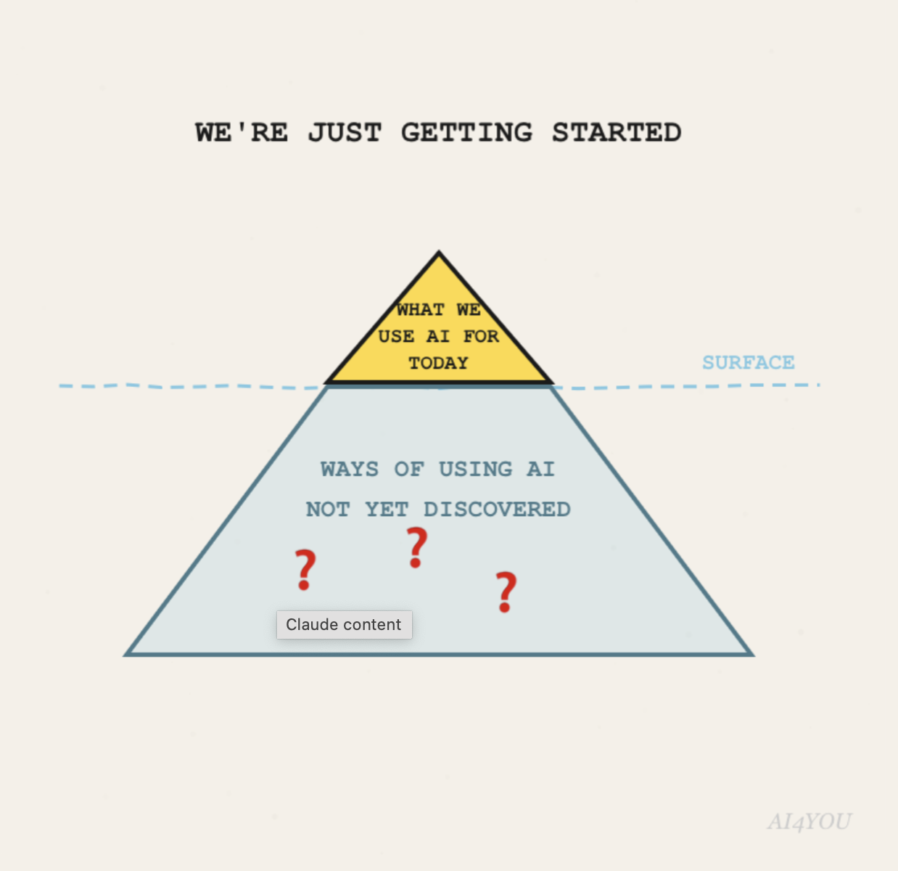

The answer is simple. AI can help you learn how to learn, and this is an important skill to have in the years to come.
Many people compare the AI transformation to the internet transformation and how much that changed our lives. I think it is a little more than that.
In the past, getting access to the right information was considered gold. At least that is what I was told in school around 15 years ago. But things have changed. With AI, you can access information from around the world in your pocket, and in many languages. We have never had that before. The AI advantage is knowing how to ask better questions, verify the answers, and turn them into action.
I know many people who use AI both in their personal lives and in their professional lives. A fun fact: many people use it in their personal lives to improve their health or plan their travels. Microsoft has even reported that health is the most common topic people discuss with Copilot on mobile.
There was also a widely shared story about an Australian man who used AI, together with scientists, to help design an experimental cancer treatment for his dog. It is not proof that AI replaces experts, but it does show how AI, used properly and combined with human expertise, can open doors that were much harder to open before.
In the end, it also depends on what you do with the information. AI can speed up research, change how you find things, and help you see patterns you might otherwise miss. But there are still many ways of using it that are yet to be discovered. My recommendation would be to use it to make your life better. And if you want to go the extra mile, use it to make the lives of the people around you better too.

Continue reading our blog posts to learn which AI tools to use and how to use them.
And if you want to join the AI4YOU challenge, get in touch.